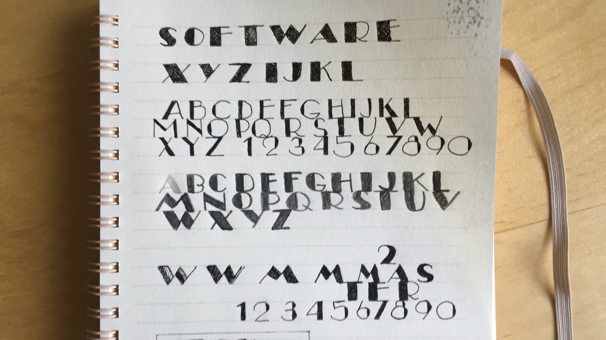
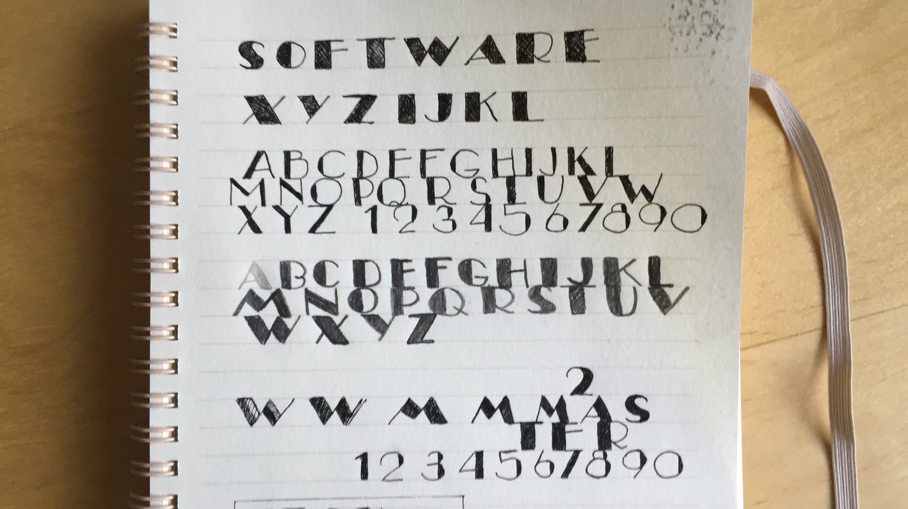

h1 { font-family: 'Squada One' }
# Open Source Vs Tech Nation
 This is a continuation of the [_*My Name Is Anton, And I’m a Victim of a Psychopath*. For the love of Open Source, you have to help me._](medium) article. Please refer to the original blog post for more information and background.
This is a continuation of the [_*My Name Is Anton, And I’m a Victim of a Psychopath*. For the love of Open Source, you have to help me._](medium) article. Please refer to the original blog post for more information and background.
Hi, I'm `zavr` and I'm an Open Source developer which is one of the hardest jobs in the world. There's no stable (or any) income, trade union or a social institute of "Open Source" that could provide assistance. We are left to our own devices, yet the whole world capitalizes on our good intentions and inventions. One of companies that thought that it could have its cake and eat it too, is Tech Nation from the UK. They are 80% publicly funded company (£5m annual sponsorship from the ministry of culture) with the aim of encouraging the growth of the tech sector, yet they have not spent a penny to help Open Source developers.
All their programs are directed towards companies that receive vendor capital, and no effort on their part is made to back Open Source, either through education, networking or some kind of mentoring (like simple "come in for a chat") channels. At the same time, they claim to be an "endorsing body" for a prestigious Tier 1 Exceptional Talent visa — where they basically require people to work on their "community profile" for free because Tech Nation is not able to understand any technical details and wants the community to do this job for them. _Tech Nation_ has no idea about challenges independent developers face, but at the same time they feel entitled to come up with any random bullshit during the decision process and then hide behind the name of the community.
## The Damn Community Profile
Let's talk about the problem straight away. I don't have what is called "community profile" and based on this fact I was discriminated against by Tech Nation, despite that it wasn't even a requirement for the visa. For many people, internet is a pretty standard place where they can visit boards and stuff. I'm scared to shit of the internet as a communication medium. I don't know the people, I'm not able to see their reaction, I don't like them making judgements about me. I avoid being social online — call me up and let's go out for a pint to really strengthen our relationship. Also once I write something online, it stays there forever. I wasn't like that when younger but then I wanted to get rid of personal history and it was crazy how much trace we leave online. But it's not the problem.
The problem I guess is my *perception* that boards are hostile, especially specialised once. Everyone thinks they are the smartest (I know it's not true but it's kind of true), and you for some reason have to go and prove something to them. Developers especially, they have their own little schemes going on, I don't think they give a crap when you try to explain them something. Internet is not a place where friends chat, not for me. At work, I quit Slack because I hated it. I love to proper talk, or write, but you never find me on Facebook or Twitter. Man I can't even listen to most of whatsapp audios... And I don't think I'm alone in this. Sometimes I get monthly+ no-email streaks because of anxiety of receiving a reply for anything. I'm really afraid of receiving responses because I don't know what they will say, which is not the case in normal conversation when people just talk to you. I might message somebody and then stay away from the phone for a couple of days then realise it's kind of mean and apologize for ghosting, but a few months later. The only nice thing is receiving some claps on medium, they are always safe. That's the only positive thing about the internet. I know things are not so bad, like I found an article on Gizmodo the other day, and there were some really nice thoughtful comments there, but generally subconsciously I'm not fully OK with having any kind of "online profile".
But is it bad? To be honest, a person with a "profile" can receive thousands of likes for a tweet about scratching his arse. People just procrastinate on Twitter, consuming mindless content. Not always, there are tweets that really do help to discover opportunities. Still I prefer to work. I love programming. I love Web Computing. I love Node.JS. I'm fluent in _JavaScript_ and I'm able to communicate my ideas with it. All of my time I spend working on my packages, which I've made 205 in a number of GitHub orgs. I founded a business, that I wanted to be an Open Source company, but Tech Nation wants to kill it, because instead of assessing my JavaScript, they want to assess what I mean for people whom I never met in my life.
 Every company has its path, and it starts with prototypes, shaping the proposition, understanding the gap where the business will fit. Creating a product is then followed by growth hacking, that is, acquiring users via marketing. But this is only secondary. You can't start selling what you don't have. It's up to everyone how to work on their business. Why is it different for my Open Source company? If I want to take my time to create something I'm happy with getting out and talking about, I have the right to do so. What Tech Nation said, is that because I didn't go out to boards to talk about my work, which I hadn't finished, I don't quality. Yet there are 2 key criteria from which one can choose: 1. innovation; 2. community profile. Despite the fact that I didn't choose the second one, because I know my strong sides, and my weaker sides, I was still discriminated against because I'm not known.
But it pisses me off so much. Skill level does not depend on how many people are following you on twitter, or how many downloads you have. For many people, it is their skill that is central to their self-worth, and endorsing bodies in technology need to understand it and appreciate the real effort that people put in. Open Source is not just community. Open Source is open to interpretation and for everyone it can be what they like. For me, it is what allowed me to cope with some really stressful shit in life. When I felt horrible, I knew that I had my laptop, my IDE and my Node, but I didn't have any community. _Open Source_ via GitHub and NPM allowed me not to shut off completely, while also helping to accumulate a portfolio of packages and express creativity in form of package names, tidy documentation styles and innovative ways to write tests. Package making is an artistic process.

A community profile is not taught at university. A community profile is a job of a marketer and I'm not against it, but it's a separate business operation that needs its own approach. After I've formed my essential software products, I can start talking about them through articles and engagements with people. But if Tech Nation wanted to assess my application, they had to look at the quality of code, documentation and tests that I produced, my ideas for the company that I outlined and my other achievements in life such as a degree in Computer Science and AI and in Computer Security and my senior role. Education is extremely expensive, yet I'm told that to receive their endorsement, I need to have a "profile" which is feasible even with "limited experience". ***** ****
This approach to applicants is not fair and is bigoted. No one should be discriminated against because of their popularity. But what is more, is that Tech Nation has done nothing to help people who might be like me, to maybe assist in networking or just general support, yet they spend all their time creating reports about the tech sector in the UK, and running programs for Close Source enterprises, which are run by their directors. Tech Nation are bullies who have no respect or kindness to young people in technology industry, and they are using Open Source only for their own aim without giving anything in return. Let's get together and prove them that _Open Source_ is not something that can be invoked to punish Open Source developers who build it.
Every company has its path, and it starts with prototypes, shaping the proposition, understanding the gap where the business will fit. Creating a product is then followed by growth hacking, that is, acquiring users via marketing. But this is only secondary. You can't start selling what you don't have. It's up to everyone how to work on their business. Why is it different for my Open Source company? If I want to take my time to create something I'm happy with getting out and talking about, I have the right to do so. What Tech Nation said, is that because I didn't go out to boards to talk about my work, which I hadn't finished, I don't quality. Yet there are 2 key criteria from which one can choose: 1. innovation; 2. community profile. Despite the fact that I didn't choose the second one, because I know my strong sides, and my weaker sides, I was still discriminated against because I'm not known.
But it pisses me off so much. Skill level does not depend on how many people are following you on twitter, or how many downloads you have. For many people, it is their skill that is central to their self-worth, and endorsing bodies in technology need to understand it and appreciate the real effort that people put in. Open Source is not just community. Open Source is open to interpretation and for everyone it can be what they like. For me, it is what allowed me to cope with some really stressful shit in life. When I felt horrible, I knew that I had my laptop, my IDE and my Node, but I didn't have any community. _Open Source_ via GitHub and NPM allowed me not to shut off completely, while also helping to accumulate a portfolio of packages and express creativity in form of package names, tidy documentation styles and innovative ways to write tests. Package making is an artistic process.

A community profile is not taught at university. A community profile is a job of a marketer and I'm not against it, but it's a separate business operation that needs its own approach. After I've formed my essential software products, I can start talking about them through articles and engagements with people. But if Tech Nation wanted to assess my application, they had to look at the quality of code, documentation and tests that I produced, my ideas for the company that I outlined and my other achievements in life such as a degree in Computer Science and AI and in Computer Security and my senior role. Education is extremely expensive, yet I'm told that to receive their endorsement, I need to have a "profile" which is feasible even with "limited experience". ***** ****
This approach to applicants is not fair and is bigoted. No one should be discriminated against because of their popularity. But what is more, is that Tech Nation has done nothing to help people who might be like me, to maybe assist in networking or just general support, yet they spend all their time creating reports about the tech sector in the UK, and running programs for Close Source enterprises, which are run by their directors. Tech Nation are bullies who have no respect or kindness to young people in technology industry, and they are using Open Source only for their own aim without giving anything in return. Let's get together and prove them that _Open Source_ is not something that can be invoked to punish Open Source developers who build it.
 Bradley Horowitz (vice president of product management at Google) makes a distinction among creators, synthesizers, and consumers. (Building Web Reputation Systems, Randall Farmer and Bryce Glass; O’Reilly Media 2010).
Bradley Horowitz (vice president of product management at Google) makes a distinction among creators, synthesizers, and consumers. (Building Web Reputation Systems, Randall Farmer and Bryce Glass; O’Reilly Media 2010).
Any community consists of 1% of people who create and 10% of people who disseminate. The 10% are people with the profile, but the packages that the 1% creates, are much stronger evidence of contribution. NPM does not encourage package creators either, because their search is also skewed towards popularity and a really good package can be on a page 1000. There's also no Open Source office, where everyone can come in and hand in their work. Therefore one is left with trying to find the reddits, newsletters, _etc_. All my negativity would eventually dissipate when I start doing it and realise it's alright and fun, but I want to prove that it is the skill and actual releases to Open Source that count 10000 more than any tweet by any influencer, and to discriminate against people who contribute their intellectual capacity to Open Source for not being known, is simply unethical.